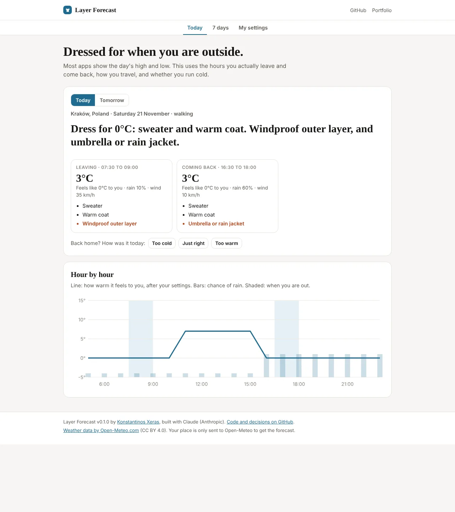

The problem
People dress for the morning and are cold or hot by the evening. One number for the day does not help. The question is what to wear for the hours you are out, for how you travel and how you feel the cold.

What it does
- Your hours. Leave and return times, plus midday if you go out. Advice uses the coldest hour of each.
- How you travel. Walking, bike or car shift the advice by about 2°C and change the rain line.
- Comfort. "I usually run cold or warm", plus a daily tap that moves the advice by half a degree, up to 5°.
- Views. Today and tomorrow, an hour by hour chart, 7 days, up to 6 places, °C or °F.
Decisions
Decision
Dress for the coldest hour you are out
Not the daily range. It matches what people feel, and needs only two times from the user.
Decision
Learn from one tap with a simple rule
Each answer moves the advice by half a degree. Anyone can see why it changed, and reset it.
Decision
No backend
The browser calls Open-Meteo directly. Free to run, and the only place your location goes is the weather service.
What I would do next
- Learn comfort separately for mornings and evenings.
- A morning notification with the headline.
- Profiles for children.
No usage data yet, so no findings. The case study lists the measures I would track.